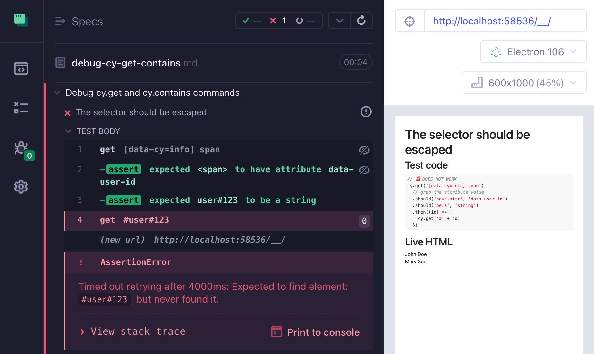

Imagine we have a Cypress test that used to pass all the time and suddenly it is failing to find a simple element. And the element is right there. What is going on? This blog post teaches you to debug a failing query command, and shows the top reasons I faced for "missing" an element.
- Summary: how to debug a failing query command
- Escape the special characters in the selector
- Accidental cy.within context
- Multiple elements matching the selector
- HTML Whitespace
- CSS text transform
Summary: how to debug a failing query command
- try finding the elements by selector from the DevTools console using regular browser commands
$$(..selector..)- ⚠️ make sure to switch the context to "Your project"
- does it find a single element or multiple elements?
- check if the selector has been properly escaped
- check if you are inside cy.within context, which limits your queries to part of the DOM
- check if there are unexpected elements matching the selector
- check the HTML text on the page for multiple whitespace characters. They might cause problems for
cy.contains - check if the HTML text is in the right case. Sometimes the text in the DOM is one case, and the displayed case is controlled by the CSS
Checking the selector from DevTools
I love checking elements from the DevTools console by manually trying $ or $$ with my selectors. The $ are not referring to jQuery, they are browser convenience aliases to the document.querySelector and document.querySelectorAll methods. Let's say we are trying to find this element:
1 | <div id="users"> |
Our test code cy.get('#user#123') fails to find the element. Let's see if the selector is problematic. First, switch the execution context to point at the project's iframe. This is how Cypress works - it iframes the application under test.
Use $ and $$ aliases to query using the browser selector engine. In our case, the browser tells us the selector #user#123 is invalid - the second # is probably the culprit. If we escape the second # it finds the right element. We can check if the element is really what we expect by hovering over the returned element reference - the browser highlights the DOM element on the page.
Tip: Cypress uses jQuery selectors to query, which go beyond the standard CSS selectors. For example, you can find the visible elements using cy.get('li:visible'). To try a selector like li:visible from the DevTools you should use the global Cypress.$ jQuery instance bundled with Cypress.
You can even try running a single cy command to find the elements right there from the DevTools console by using the very special cy.now command. Let's check if the cy.contains command can find the user "John". The syntax to call from the DevTools is:
1 | cy.now('contains', '#user\\#123', 'John')() |
Interestingly, you can call the cy.now command straight from the default "top" context of the browser window.
I love using plain CSS and jQuery selectors from the DevTools, this is why I prefer not to use abstractions on top of other libraries. It is simpler to remember and try $('[role=dialog]') command in any DevTools that something that requires a library to do the same thing.
Now let's see the top problems that might "hide" an element during testing and how to solve them.
üéÅ You can find full source code for these problems and solutions in the recipe Debug cy.get and cy.contains commands of my Cypress Examples site.
Escape the special characters in the selector
Imagine we do not control the selector, instead it comes from the application. In this HTML snippet, one of the hidden elements has the element ID we want to use in the cy.get command.
1 | <div data-cy="info" style="display:none;"> |
The test code fragment fails to find the element, even though it exists.
1 | // üö® DOES NOT WORK |

We know from the "Debugging selector" section above that the #user#123 selector is invalid. Since we don't control it, we need to always escape the selector before calling cy.get. Luckily there is jQuery.escapeSelector method we can use.
1 | // ✅ CORRECT TEST |
I sandwiched the $.escapeSelector call between the attribute and the string assertions to print it to the Command Log. Notice the escaped # character.

Accidental cy.within context
Take the same HTML snippet from the above example
1 | <div class="main"> |
Imagine we drill into the data-cy="info" element using several commands and apply the cy.within command. We know get the valid escaped string id, but for some reason, the next test fails to find anything ☹️
1 | // üö® DOES NOT WORK |
Notice the "- within" command I marked with the orange arrow. Usually cy.get command searches the elements from the start of the page. But inside cy.within context the cy.get command starts the search from the current subject element. Thus it tries in vain to find the element with the given Id in this part of the page where we got the ID attribute:
1 | <div data-cy="info" style="display:none;"> |
Of course, it fails to find anything! There are a couple of solutions to this problem.
- Temporarily escape the
cy.withincontext and usecy.parent().find(selector)combination.
1 | // ✅ CORRECT TEST (escape cy.within) |
- You can refactor the code to move
cy.getoutside thecy.within. You have already seen an example above of using a local closure variable +.then(callback)to make the query after thecy.withincommand. You can also use an alias to save the extracted ID and access it later usingcy.get(alias).then(value => ...)syntax.
1 | // ✅ CORRECT TEST (save under an alias) |
Multiple elements matching the selector
Imagine we are trying to find the user that we see on the page and want to confirm the text we see. Somehow we don't get the item...
1 | <div id="users"> |
1 | // üö® DOES NOT WORK |
The crossed eye icon next to the cy.get command is the hint: some of the found elements are invisible. We can click on the failed command to see the 2 elements it found. We can also query the page ourselves using $$(selector) DevTools commands (see the start of this blog post). Note that the $$ command searches the DOM snapshot currently in the application page, thus we can search the elements in the same page as the command itself.
Ok, seems there is an invisible element that we should ignore when looking. Let's use the jQuery pseudo selector :visible to limit the query.
1 | // ✅ CORRECT TEST |
HTML Whitespace
Notice the HTML markup has 2 spaces between words "John" and "Doe". The browser renders it as a single space.
1 | <div id="user1">John Doe</div> |
If we use the username exactly like the HTML source (for example, we might grab the username from the network intercept spy), then we will try to find a string with 2 spaces and will fail.
1 | // üö® DOES NOT WORK |
It is hard problem to detect visually, since the page and the error message collapse the white spaces into one. I usually detect this problem by running cy.contains from the terminal using cy.now and inspecting the HTML element in the DevTools Elements. On CI I save HTML DOM pages on test failures, see Save The Page On Test Failure.
If you suspect that the text you are looking for might have multiple whitespace characters, collapse them into one.
1 | // ✅ CORRECT TEST |
CSS text transform
Sometimes the text appearance is changed by a CSS transform. In the snippet below the user name is all lowercase.
1 | <style> |
Thanks to text-transform: capitalize; CSS we see a different story on the page and our test fails.
1 | // üö® DOES NOT WORK |
The solution is too look up the element in the DevTools panel and observe they are lowercase.
Let's search by the actual text in the HTML node
1 | // ✅ CORRECT TEST |
Do you have a situation where a Cypress test fails to find an element that is right there? Let me know. If you can provide a small reproducible example, then I am sure we can figure it out.